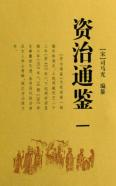

| 历史史籍 > |
| 资治通鉴 |
| [宋]司马光 主编 |
|
资治通鉴监，简称通鉴，编年体通史。294卷，另有《考异》、《目录》各30卷。本书以时间为纲，事件为目，记载从周威烈王二十三年（公元前403年）起，至五代显德六年（959）征淮南止，涵盖16朝1362年的历史。编者总结出许多经验教训，供统治者借鉴，宋神宗认为此书“鉴于往事，有资于治道”，定名为《资治通鉴》。 北宋司马光主编，历时19年完成。协修者有刘恕、刘攽、范祖禹三人。刘恕博闻强记，自《史记》以下诸史，旁及私记杂说，无所不览，对《通鉴》的讨论编次，用力最多。刘攽于汉史、范祖禹于唐史，都有专深的研究。他们分工合作，最后由司马光修改润色、增加评论，写成定稿。元丰八年，范祖禹、司马康、黄庭坚、张舜民等奉命重行校定，元祐元年（1086）校定完毕，送往杭州雕版，元祐七年刊印行世。 [2019年5月，重新整理] |
 |